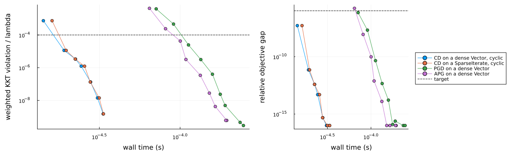

Weighted lasso: CD, PGD and APG
A weighted lasso penalizes each coefficient with its own weight, and a zero weight leaves a coefficient unpenalized. We compare four configurations that the support matrix lists for this problem in Float64, all started from zero, and require independently checked accuracy before comparing their times: cyclic coordinate descent (CD) on a dense Vector, cyclic CD on a SparseIterate, proximal gradient descent (PGD) and accelerated proximal gradient descent (APG) on a dense Vector.
For a response $y$, a design $X$ with $n$ rows, a level $\lambda$ and weights $w_j \ge 0$, the objective is
\[\min_\beta\quad F(\beta) = \frac{1}{2n}\|y-X\beta\|_2^2 + \lambda\sum_{j=1}^p w_j|\beta_j|.\]
This is the normalized form (s = 1/n) of the weighted-lasso tutorial: the smooth part is (1 / n) * LeastSquaresLoss(y, X) and the penalty is NormL1(lambda, w). The weights belong to the penalty; this is not weighted least squares, and no weight enters the loss. A zero weight leaves its coordinate unpenalized, and does not fix the coefficient at zero.

Each marker is a separate solve from zero at one tolerance setting. A setting reaches the common target only when it is at or below the dashed line in both panels. The figure compares accuracy and measured effort in this reproducible experiment; it is not an iteration history or evidence of a universal speed advantage.
A reproducible weighted-regression experiment
The design has n = 400 rows and p = 60 columns, built as an AR(1) sequence with parameter rho = 0.5, the population correlation of neighbouring columns. Five coefficients of the generating vector beta0 are nonzero. The weights follow a fixed rule: w[j] cycles through 0.5, 1, 2 along the columns, and the first two weights are then set to zero, so that coefficients 1 and 2 are unpenalized. We generate $y=X\beta^\star+\varepsilon$ with unit-variance Gaussian noise.
The level is lambda = lambda_max / 10. Let U be the unpenalized coordinates. Fitting them alone by least squares gives bU = X[:, U] \ y and the residual r = y - X[:, U] * bU. The point with bU on U and zero elsewhere has zero gradient on U by the normal equations, so it is a minimizer of the objective exactly when |grad_j| <= lambda * w[j] for every penalized j, where grad_j = X[:, j]' * r / n up to sign. Hence lambda_max = maximum(abs(X[:, j]' * r) / n / w[j]) over the penalized j is the smallest level at which that point is a minimizer, for a full-column-rank X[:, U].
using LinearAlgebra, Printf, Random, ProximalBase, ProximalSolvers
rho = 0.5
n, p = 400, 60
rng = Xoshiro(4)
Z = randn(rng, n, p)
X = similar(Z)
X[:, 1] = Z[:, 1]
for j in 2:p
X[:, j] = rho * X[:, j-1] + sqrt(1 - rho^2) * Z[:, j]
end
beta0 = zeros(p)
beta0[[1, 4, 10, 25, 40]] = [2.0, -1.5, 1.0, -1.0, 0.75]
y = X * beta0 + randn(rng, n)
w = [0.5, 1.0, 2.0][mod1.(1:p, 3)]
w[1:2] .= 0.0
unpenalized = findall(iszero, w)
penalized = findall(!iszero, w)
bU = X[:, unpenalized] \ y
r = y - X[:, unpenalized] * bU
lambda_max = maximum(j -> abs(dot(X[:, j], r)) / n / w[j], penalized)
lambda = lambda_max / 10
f = (1 / n) * LeastSquaresLoss(y, X)
g = NormL1(lambda, w);Check accuracy without trusting the stopping flag
The objective and the weighted KKT violation below are computed from X, y, the level, the weights and the coefficients alone; they take lambda * w[j] from these arguments, not from the solver's penalty object. For grad = X' * (X * beta - y) / n, the violation at a zero coefficient is the excess of |grad[j]| over lambda * w[j], clipped at 0, and at a nonzero coefficient it is |grad[j] + lambda * w[j] * sign(beta[j])|. For w[j] = 0 both reduce to |grad[j]|. These are the first-order optimality conditions for the displayed objective. The largest violation, divided by lambda, provides a common stationarity measure despite the solvers' different stopping rules. A solver reporting converged does not replace this check: converged reports that the solver's own stopping test passed. For PGD and APG that test includes a stationarity check at the solver's own threshold (see src/utils.jl), and for CD it is a test on the change over a pass; neither is this page's two-part target.
objective(beta, lam = lambda) = sum(abs2, y - X * beta) / (2n) + lam * sum(w .* abs.(beta))
function kktviolation(beta, lam = lambda)
grad = X' * (X * beta - y) / n
maximum(eachindex(beta)) do j
iszero(beta[j]) ? max(abs(grad[j]) - lam * w[j], 0.0) : abs(grad[j] + lam * w[j] * sign(beta[j]))
end
endkktviolation (generic function with 2 methods)Worked check of lambda_max: at that level the point (bU, 0) has a violation of at most 1e-10 * lambda_max, which the assertion below checks.
beta_zero = zeros(p)
beta_zero[unpenalized] = bU
@assert kktviolation(beta_zero, lambda_max) <= 1e-10 * lambda_max;Construct a reference estimate
The reference objective fstar comes from cyclic coordinate descent on a dense Vector at a very small tolerance with relative = false. Its independent KKT violation is checked, and the solution keeps its unpenalized coordinates and some penalized ones nonzero.
reference = zeros(p)
refresult = solve!(reference, f, g,
CDSolver(order = :cyclic, momentum = false, relative = false, tol = 1e-14, maxpasses = 1_000_000))
fstar = objective(reference)
@assert refresult.converged
@assert kktviolation(reference) / lambda <= 1e-10
@assert all(!iszero, reference[unpenalized]) && any(!iszero, reference[penalized])Compare solver settings from the same start
Each run starts from zero. The time of a setting is the minimum over three timed calls after one warm-up call; a timed call allocates the starting iterate and calls solve!, and for the SparseIterate it also converts the result to a Vector, so these costs are included. The coefficients and the result of the call that gave the minimum time are kept, so the time, the work and the accuracy of a table row or marker come from one call. Both CD configurations use cyclic order and no momentum, which fixes the order of the coordinate updates, and are swept over tol. Proximal gradient descent, plain and accelerated, is swept over one scale used for xtol and gradtol (with ftol = 0).
function measure(run!; repetitions = 3)
besttime, beta, result = Inf, zeros(p), nothing
for k in 1:repetitions + 1
elapsed = @elapsed (b, r) = run!()
if k > 1 && elapsed < besttime
besttime, beta, result = elapsed, b, r
end
end
besttime, beta, result
end
function sweep(settings, runner, work)
map(settings) do setting
time, beta, result = measure(runner(setting))
(setting = setting, time = time, work = work(result), converged = result.converged,
gap = (objective(beta) - fstar) / abs(fstar), kkt = kktviolation(beta) / lambda)
end
end
cdsettings = 10.0 .^ (-3:-1:-9)
cddenseruns = sweep(cdsettings,
tol -> (solver = CDSolver(order = :cyclic, momentum = false, tol = tol);
() -> (x = zeros(p); r = solve!(x, f, g, solver); (x, r))),
result -> result.passes)
cdsparseruns = sweep(cdsettings,
tol -> (solver = CDSolver(order = :cyclic, momentum = false, tol = tol);
() -> (x = SparseIterate(p); r = solve!(x, f, g, solver); (Vector(x), r))),
result -> result.passes)
gradientruns(method) = sweep(10.0 .^ (-3:-1:-11),
scale -> (options = ProximalOptions(maxiter = 100_000, ftol = 0, xtol = scale, gradtol = scale);
() -> (beta = zeros(p); r = solve!(beta, f, g, method, options); (beta, r))),
result -> result.iterations)
pgdruns = gradientruns(ProximalGradientDescent())
apgruns = gradientruns(AccProxGradDescent());Time to the target accuracy
A setting reaches the target when its relative objective gap is at most gaptarget and its KKT violation divided by lambda is at most kkttarget; the time to target of a solver is that of the first such setting in its sweep, ordered from the loosest to the tightest. That time is not necessarily the shortest among the settings that meet both targets: a tighter setting can be timed faster, for example through timing noise.
gaptarget = 1e-6
kkttarget = 1e-4
reached(run) = run.gap <= gaptarget && run.kkt <= kkttarget
sweeps = ["CD on a dense Vector, cyclic" => (cddenseruns, "tol", "passes"),
"CD on a SparseIterate, cyclic" => (cdsparseruns, "tol", "passes"),
"PGD on a dense Vector" => (pgdruns, "scale", "iterations"),
"APG on a dense Vector" => (apgruns, "scale", "iterations")]
function tablerow(name, runs, parameter, unit)
k = findfirst(reached, runs)
k === nothing && return @sprintf("| %s | not reached | not reached | not reached | not reached | not reached |", name)
run = runs[k]
@sprintf("| %s | %s = %.0e | %.2f | %d %s | %.2e | %.2e |",
name, parameter, run.setting, 1000 * run.time, run.work, unit, run.gap, run.kkt)
end
table = join(vcat(["| Solver | Setting at target | Time to target (ms) | Work at target | Objective gap | KKT/lambda |",
"|:--|:--|--:|--:|--:|--:|"],
[tablerow(name, runs, parameter, unit) for (name, (runs, parameter, unit)) in sweeps]), "\n");The script prints the table as plain Markdown text; the documentation page shows it rendered.
using Markdown
Markdown.parse(table)| Solver | Setting at target | Time to target (ms) | Work at target | Objective gap | KKT/lambda |
|---|---|---|---|---|---|
| CD on a dense Vector, cyclic | tol = 1e-04 | 0.02 | 12 passes | 7.07e-12 | 1.14e-05 |
| CD on a SparseIterate, cyclic | tol = 1e-04 | 0.02 | 12 passes | 7.07e-12 | 1.14e-05 |
| PGD on a dense Vector | scale = 1e-05 | 0.11 | 22 iterations | 4.52e-11 | 2.46e-05 |
| APG on a dense Vector | scale = 1e-05 | 0.10 | 16 iterations | 9.69e-11 | 4.26e-05 |
Each configuration must reach the target at some setting of its sweep; this checks accuracy and says nothing about time.
for (name, (runs, parameter, unit)) in sweeps
@assert any(reached, runs) "$name does not reach the target in its sweep"
endA relative gap below -1e-10 would mean that a configuration found a lower objective than the reference, so the reference would not be the optimum from which the gaps are measured. The bound is far above the rounding of the objective and far below gaptarget. The check covers every setting of every sweep, and the script prints the smallest gap observed.
for (name, (runs, parameter, unit)) in sweeps, run in runs
@assert run.gap >= -1e-10 "$name, $parameter = $(run.setting): objective gap $(run.gap) is below the reference"
end
println("smallest objective gap over all runs: ", minimum(run.gap for (_, (runs, _, _)) in sweeps for run in runs))smallest objective gap over all runs: -1.209656600264919e-16Reproduce and interpret the figure
The left panel plots the independent weighted KKT residual divided by lambda; the right plots the relative objective gap. Both use logarithmic time and accuracy scales. Values below 1e-16 are drawn at that floor so they can appear on a logarithmic axis; the table and assertions use the original values. A small objective gap can reflect rounding or the finite accuracy of the numerical reference; a negative gap, if any, is at most 1e-10 in magnitude by the assertion above. Plot generation runs in the documentation environment. Ordinary script execution and the examples test runner compute the table and assertions without loading Plots.
using Plots
plotfloor(v) = max(v, 1e-16)
kktplot = plot(xscale=:log10, yscale=:log10, xlabel="wall time (s)",
ylabel="weighted KKT violation / lambda", legend=false)
gapplot = plot(xscale=:log10, yscale=:log10, xlabel="wall time (s)",
ylabel="relative objective gap", legend=:outerright)
for (name, (runs, parameter, unit)) in sweeps
plot!(kktplot, [run.time for run in runs], [plotfloor(run.kkt) for run in runs];
marker=:circle, label=name)
plot!(gapplot, [run.time for run in runs], [plotfloor(run.gap) for run in runs];
marker=:circle, label=name)
end
hline!(kktplot, [kkttarget]; color=:black, linestyle=:dash, label="target")
hline!(gapplot, [gaptarget]; color=:black, linestyle=:dash, label="target")
accuracy_plot = plot(kktplot, gapplot; layout=(1, 2), size=(1250, 400),
bottom_margin=5Plots.mm, left_margin=5Plots.mm)
savefig(accuracy_plot, "weighted_lasso_solvers.svg")
nothingA solver can have a small objective gap while its KKT residual is still large. Read the two panels together: one summarizes objective quality, the other checks stationarity. The table identifies the first tested setting satisfying both targets, rather than assuming that equal tolerance values give the same accuracy across solvers.
Limitations of the comparison
The times illustrate how to compare the solvers at one common accuracy target on this one problem, one design, one weight pattern and one lambda; they come from one machine in one run and are not benchmark evidence (see Benchmarks and performance). A CD pass and a PGD iteration are different units of work: a full pass visits each coordinate once and an active pass the active coordinates, while a PGD or APG iteration forms products with X and its transpose (more of them when its line search rejects a trial).
The timing protocol here includes starting-iterate allocation and, for the SparseIterate, the conversion back to a dense vector. The lasso comparison times the solve! call alone for each setting and reports the SVD setup of its ADMM loss separately, so times from those two pages should not be read as a comparison of the two models. This experiment uses Float64, one seed, one correlation pattern, one weight pattern and one penalty level; Float32 is in the support matrix (Supported problems) and is not run here. Additional seeds, data geometries, and machines can change the measured ordering. A good optimization result also does not prove that the selected coefficients are scientifically correct: noise, correlated predictors, and the chosen weights and penalty affect support recovery.
What we learned
Weights change the penalty coefficient lambda * w[j] of each coordinate, which is the cutoff for |grad[j]| at a zero coefficient in the KKT conditions, and a zero weight makes the condition at that coordinate grad[j] = 0. One objective and one residual, computed from each returned fit, serve for CD on two iterate types, PGD and APG. Runs that meet the same independently checked target, with their own measured gaps and residuals, make the reported effort interpretable, while broader performance claims belong in a controlled benchmark study.